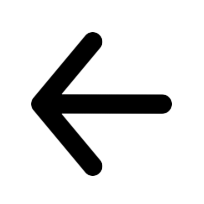
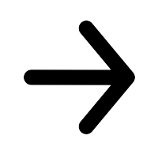

<!DOCTYPE html>
<html>

<head>
    <title>My practice</title>
    <script src="https://unpkg.com/jspsych@7.2.1"></script>
    <script src="https://unpkg.com/@jspsych/plugin-html-keyboard-response@1.1.0"></script>
    <script src="https://unpkg.com/@jspsych/plugin-image-keyboard-response@1.1.0"></script>
    <script src="https://unpkg.com/@jspsych/plugin-preload@1.1.0"></script>
    <script src="stimuli.js"></script>
    <link href="https://unpkg.com/jspsych@7.2.1/css/jspsych.css" rel="stylesheet" type="text/css" />
</head>

<body></body>
<script>

    /* initialize jsPsych */
    var jsPsych = initJsPsych({
        on_finish: function () {
            jsPsych.data.displayData();
        }
    });

    /* create timeline */
    var timeline = [];

    /* preload images */
    var preload = {
        type: jsPsychPreload,
        images: ['img/arrow_left.png', 'img/arrow_right.png', 'img/cong_right.png', 'img/cong_left.png', 'img/incong_right.png', 'img/incong_left.png']
    };

    /* define welcome message trial */
    var welcome = {
        type: jsPsychHtmlKeyboardResponse,
        stimulus: "Welcome to the experiment. Press any key to begin."
    };

    /* define instructions trial */
    var instructions = {
        type: jsPsychHtmlKeyboardResponse,
        stimulus: `
        <p>In this experiment, five arrows will appear in the center 
        of the screen.</p><p>If the central arrow is <strong>pointing left</strong>, 
        press the left arrow key on the keyboard as fast as you can.</p>
        <p>If the central arrow is <strong>pointing right</strong>, press the right arrow key 
        as fast as you can.</p>
        <div style='width: 700px;'>
        <div style='float: left;'></img>
        <p class='small'><strong>Press the left arrow key</strong></p></div>
        <div style='float: right;'></img>
        <p class='small'><strong>Press the right arrow key</strong></p></div>
        </div>
        <p>Press any key to begin.</p>
      `,
        post_trial_gap: 2000
    };

    /* define fixation */
    var fixation = {
        type: jsPsychHtmlKeyboardResponse,
        stimulus: '<div style="font-size:60px;">+</div>',
        choices: "NO_KEYS",
        trial_duration: 500,
        data: {
            task: 'fixation'
        }
    };

    var practice_stimuli = [
        { stimulus: "img/cong_left.png", correct_response: 'ArrowLeft' },
        { stimulus: "img/cong_right.png", correct_response: 'ArrowRight' },
        { stimulus: "img/incong_left.png", correct_response: 'ArrowLeft' },
        { stimulus: "img/incong_right.png", correct_response: 'ArrowRight' }
    ];

    var test = {
        type: jsPsychImageKeyboardResponse,
        stimulus: jsPsych.timelineVariable('stimulus'),
        choices: ['ArrowLeft', 'ArrowRight'],
        data: {
            task: 'flanker',
            correct_response: jsPsych.timelineVariable('correct_response')
        },
        on_finish: function (data) {
            data.correct = jsPsych.pluginAPI.compareKeys(data.response, data.correct_response);
        }
    };

    var outcome = {
        type: jsPsychHtmlKeyboardResponse,
        stimulus: function (data) {
            if (jsPsych.data.get().last(1).trials[0].correct == true) {
                return "right"
            } else if (jsPsych.data.get().last(1).trials[0].response == null) {
                return "missed"
            }
            else {
                return "wrong"
            }
        },
        trial_duration: 1000,
        data: {
            task: "feedback"
        }
    };

    var blank = {
        type: jsPsychHtmlKeyboardResponse,
        stimulus: "",
        choices: "NO_KEYS",
        trial_duration: 500,
        data: {
            task: "blank"
        }
    };

    var practice_procedure = {
        timeline: [fixation, test, outcome, blank],
        timeline_variables: practice_stimuli,
        data: {
            phase: 'practice'
        },
        randomize_order: true
    };

    var start_task = {
        type: jsPsychHtmlKeyboardResponse,
        stimulus: `
        <p>You have completed the practice trial.</p>
        <p>Press any key to begin.</p>
      `,
        post_trial_gap: 1000
    };

    var test_procedure = {
        timeline: [fixation, test, outcome, blank],
        timeline_variables: test_stimuli,
        data: {
            phase: 'test',
            
        },
        randomize_order: true
    };

    /* create the end screen */

    var end = {
        type: jsPsychHtmlKeyboardResponse,
        stimulus: `<p>You're done! A .csv file containing your data should be automatically downloading right now.
        Check your default downloads location to find it. Once you've found it you can close the experiment.</p>`,
        on_load: function () {
            jsPsych.data.get().filter({ phase: 'test', task: 'flanker' })
                .ignore('internal_node_id')
                .ignore('time_elapsed')
                .ignore('trial_type')
                .ignore('stimulus')
                .ignore('task')
                .ignore('phase')
                .ignore('trial_index')
                .localSave('csv', 'flanker_task.csv');
        }
    };


    timeline.push(preload);
    timeline.push(welcome);
    timeline.push(instructions);
    timeline.push(practice_procedure);
    timeline.push(start_task);
    timeline.push(test_procedure);
    timeline.push(end);

    /* start the experiment */
    jsPsych.run(timeline);

</script>

</html>